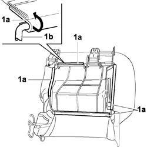
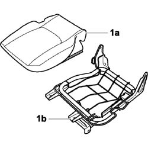
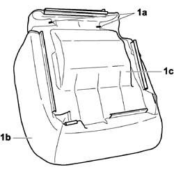
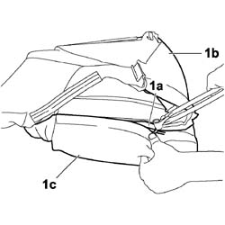
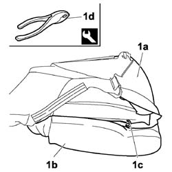
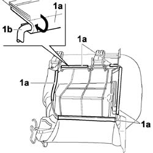

7050D22 CUSHION COVER for left or right individual rear seat - R.R.
- Path
- Procedures > 70 FITTINGS > 7050 REAR SEATS > 7050D REAR SEAT COVERS/UPHOLSTERY > 7050D22 CUSHION COVER for left or right individual rear seat - R.R.
- Kind
- repair procedure (removal / refitting; the operation number is the code)
- Applies to
- engines: 1.4 8v, 1.6 16v, 1.3 JTD 16V, 1.9 JTD 8V; all production periods
- Interactive page
- https://sloeber94.github.io/elrnDB-fDbl/en/#/2585210
Applies to: engines: 1.4 8v, 1.6 16v, 1.3 JTD 16V, 1.9 JTD 8V; all production periods; only with equipment: 7 seater and Doblò trim level
 Removing
Removing
 Refitting
RefittingOp. 7050A25 CUSHION FOR INDIVIDUAL SIDE REAR SEAT (ONE), LEFT OR RIGHT - R.R.
Fold the cushion to upright position.
1. Prise the sides (1a) of the cushion trim up from chassis profile (1b).

Applies to: engines: 1.4 8v, 1.6 16v, 1.3 JTD 16V, 1.9 JTD 8V; all production periods; only with equipment: 7 seater and Doblò trim level
1. Separate the cushion trim complete with padding (1a) from frame (1b).

Applies to: engines: 1.4 8v, 1.6 16v, 1.3 JTD 16V, 1.9 JTD 8V; all production periods; only with equipment: 7 seater and Doblò trim level
1. Cut the retaining hooks (1a) and partly separate trim (1b) from cushion padding (1c).

Applies to: engines: 1.4 8v, 1.6 16v, 1.3 JTD 16V, 1.9 JTD 8V; all production periods; only with equipment: 7 seater and Doblò trim level
1. Cut the retaining hooks (1a) located on the cushion seat and detach trim (1b) from the padding.

Applies to: engines: 1.4 8v, 1.6 16v, 1.3 JTD 16V, 1.9 JTD 8V; all production periods; only with equipment: 7 seater and Doblò trim level
Refitting
RemovingCheck that the padding and trim are not damaged.
If they are, replace the damaged part.
Fit the trim on the padding.
1. Secure trim (1a) to the cushion padding (1b) using new hooks (1c) with the aid of tool (1d).
 | Name | Country |
|---|---|---|
1d | Pliers for metal points | 1.878.017.001 |

Applies to: engines: 1.4 8v, 1.6 16v, 1.3 JTD 16V, 1.9 JTD 8V; all production periods; only with equipment: 7 seater and Doblò trim level
Fit the trim with padding on the seat frame.
1. Fit the cushion trim edges (1a) over the frame profile (1b).

Applies to: engines: 1.4 8v, 1.6 16v, 1.3 JTD 16V, 1.9 JTD 8V; all production periods; only with equipment: 7 seater and Doblò trim level
Op. 7050A25 CUSHION FOR INDIVIDUAL SIDE REAR SEAT (ONE), LEFT OR RIGHT - R.R.